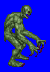
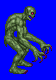
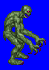
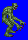

Height: Human height Weight: About 200 lbs.
Habitat: Graveyard, cave Origin: Middle East
Meaning: Ancient Arabic for "misfortune" and "fear".
A walking cadaver that consumes the flesh of humans. The representation differs depending on region. Typically it appears like a zombie, but in some literature, it is depicted as a corpse with tufts of hair sticking out at odd angles. In ancient Arabian myth, an evil god brought cadavers into unlife using necromancy to do his evil deeds.
See also: Zombie, Wight, Skeleton, and Necromancer